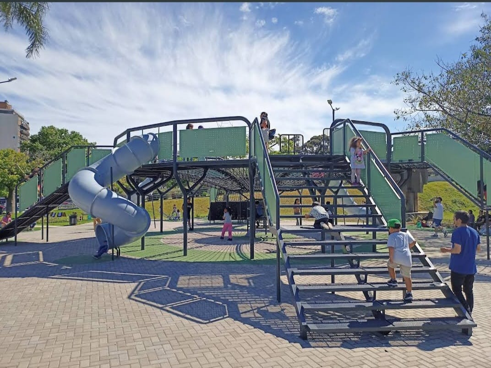
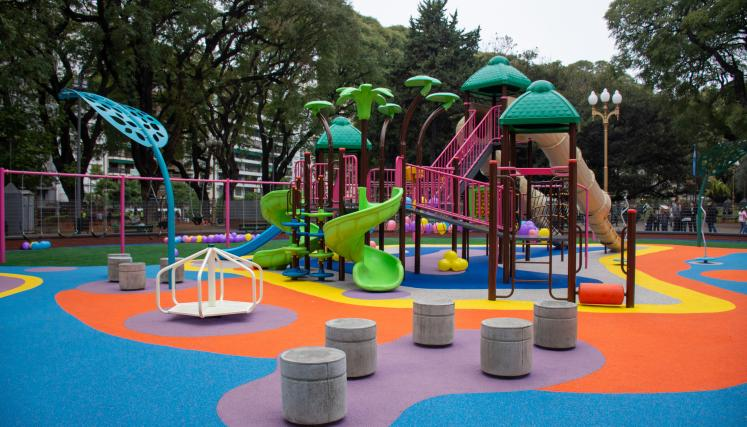
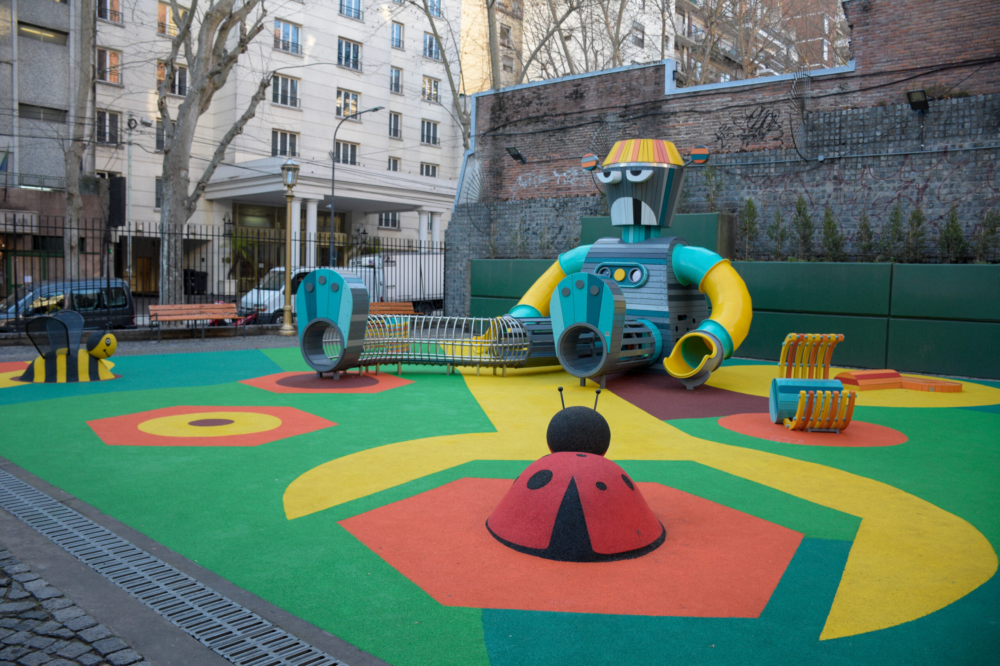
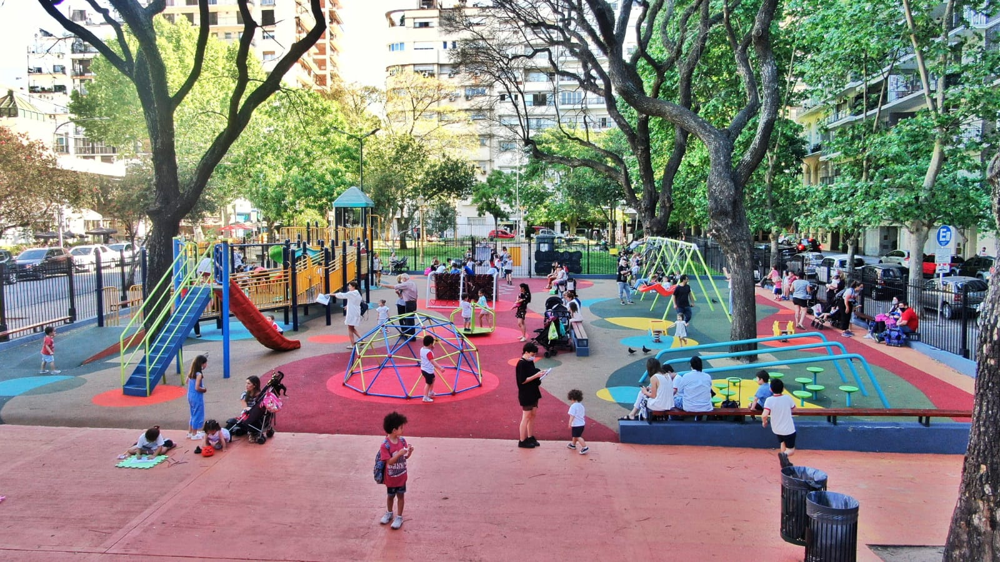

Barrio de Recoleta
Este Barrio es llamado la 'París Argentina' por su arquitectura, es famosa por los lugares a dónde visitar, como el Cementerio de Recoleta, el Centro cultural de Recoleta, el Ateneo Grand Splendid, la Floralis Genérica, La Facultad de Derecho, la Biblioteca Nacional y entre otros lugares.
Parque Thays
Ubicado en la Avenida Libertador entre Callao y Pueyrredon, es un Parque que contiene 2 zonas de juegos infantiles, y tiene también una zona deportiva, integrando así a toda la familia y a todas las edades.
En esta plaza se permiten perros y tiene área para Patinetas y es accesible para personas que se encuentran en sillas de ruedas
Horario: Está abierto las 24 Hs.
Qué conocer cerca del Parque: Cerca de este Parque hay gran variedad de sitios para conocer ya que está ubicado en pleno pulmón de Recoleta, entre los sitios a los que se puede ir está: La Facultad de Derecho, Floralis Genérica, Museo Nacional de Bellas Artes, Centro Cultural de Recoleta, Patio Bulrich.
En el siguiente mapa podrás ver la ubicación del Parque y si quieres ver tu ubicación para saber si estás cerca del Parque, por favor dale a Permitir para que el mapa te muestre tu ubicación


Parque Vicente López y Planes
Ubicado entre las calles Arenales, Juncal, Montevideo y Paraná, es un Parque que contiene 2 zonas de juegos infantiles, uno para grandes y otro para chicos. También tiene calistenia y canchas de fútbol tenis, integrando así a toda la familia y a todas las edades.
En esta plaza se permiten perros y tiene área para Patinetas y es accesible para personas que se encuentran en sillas de ruedas
Horario: Está abierto desde las 8am hasta las 10pm.
Qué conocer cerca del Parque: Cerca de este Parque se encuentra el Museo del Holocausto de Buenos Aires, El Ateneo Grand Splendid, la Plaza Rodríguez Peña, tiendas para comer como Rapanui y Quotidiano y la Avenida Santa Fe con gran variedad de tiendas
Cómo llegar al Parque:
Plaza Rubén Darío
Ubicado entre la Avenida Libertador y Avenida Pres. Figueroa Alcorta y la calle Austria, es un Parque que contiene zona de juegos infantiles con arenero para los más pequeños y muchas hamacas!!!.
En esta plaza se permiten perros y tiene área para Patinetas y es accesible para personas que se encuentran en sillas de ruedas
Horario: Está abierto desde las 8am hasta las 8pm.
Qué conocer cerca del Parque: Cerca de este Parque hay gran variedad de sitios para conocer, ya que está ubicado en pleno pulmón de Recoleta, entre los sitios a los que se puede ir está: La Facultad de Derecho, Floralis Genérica, Museo Nacional de Bellas Artes y la Biblioteca Nacional.
Cómo llegar al Parque:


Plazoleta Mujica Lainez
Ubicado entre las calles Vicente Lópes y Junín, es un Parque en forma de Robot. También tiene calistenia y canchas de fútbol tenis, integrando así a toda la familia y a todas las edades.
En esta plaza es accesible para personas que se encuentran en sillas de ruedas
Horario: Está abierto desde las 9am hasta las 8pm.
Qué conocer cerca del Parque: Cerca de este Parque se encuentra el Recoleta Urban Mall, el Cementerio de Recoleta, el Centro Cultural de Recoleta, variedad de Restaurantes y la Avenida Las Heras con gran variedad de tiendas
Cómo llegar al Parque:
Plaza República del Paraguay
Ubicado en la calle Peña entre las calles Larrea y Barrientos, es un Parque con gran espacio para que los chicos jueguen
En esta plaza se permiten perros y es accesible para personas que se encuentran en sillas de ruedas
Horario: Está abierto las 24 Hs.
Qué conocer cerca del Parque: Cerca de este Parque hay gran variedad de sitios para comer como Mc Donald`s, Le Moulin de la Fleur, Helados Búffala, entre otros, ya que está muy cerca de la Av. Las Heras y la Av. Pueyrredon. También está cerca y se puede ir a conocer el Recoleta Urban Mall.
Cómo llegar al Parque:
